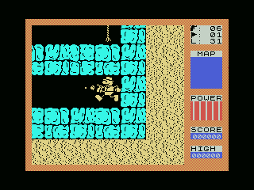
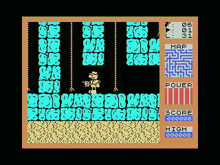

FRED
The 1984 Quicksilva Spectrum game converted into a 64 KB MSX cartridge with native SCREEN 2 presentation, redefinable keyboard and PSG sound.
The patch in numbers
8,394bytes of IPS
64 KBASCII16 cartridge
35 / 25held-fire VBlanks
0ROM images distributed
Running on MSX


openMSX captures of the documented build. The second image shows the acquired map scrolling around Fred's red hardware-sprite marker.
What the conversion adds
- A cached native SCREEN 2 renderer and VBlank-synchronised presentation.
- A scrolling tracking map centred on Fred, with a hardware-sprite marker.
- Stable key redefinition and delayed repetition while keeping the first shot immediate.
- Non-blocking PSG adaptation of the original beeper routines.
- Prevention of duplicate object positions, plus the reference disassembly and patch sources.
Araubi completed the game from beginning to end. Automated tests cover rendering, map pixels and timing, object generation, transitions, C-BIOS and fire cadence.
Apply the IPS
Supply your own Fred_1984_Quicksilva_re_release.z80 snapshot with SHA-256 05e2437c...8271e0:
python tools\normalize.py python tools\make_ips.py apply build\Fred_MSX1_base.rom patch\Fred_MSX1.ips build\Fred_MSX1.rom
The result must have SHA-256 4f5dc53e...4c59b1. No snapshot or ROM is distributed.